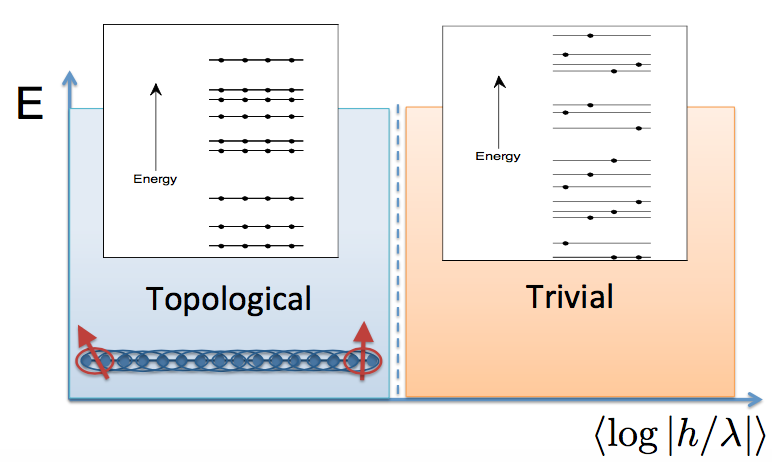
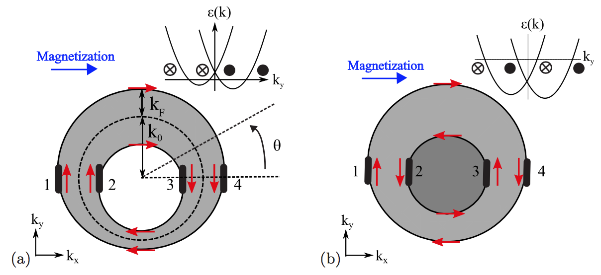
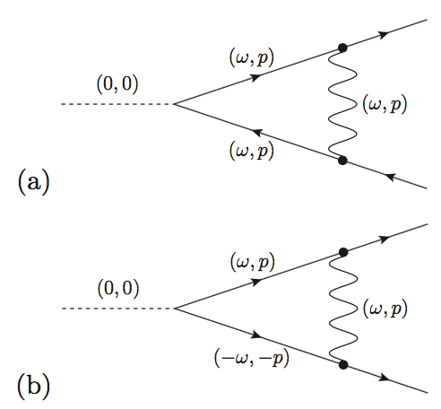
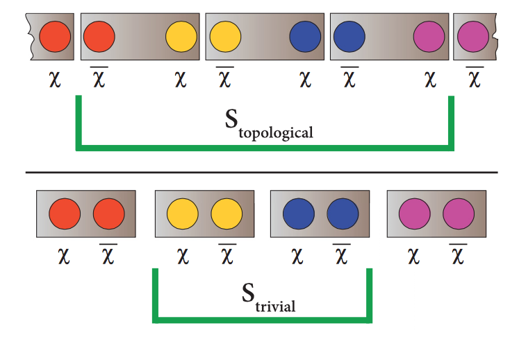
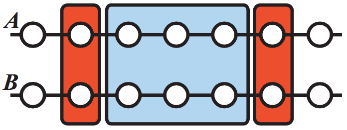
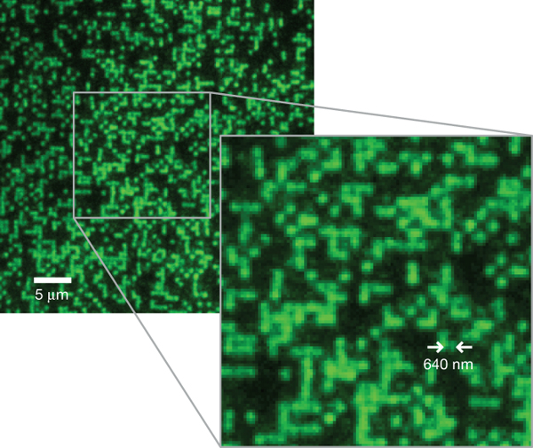
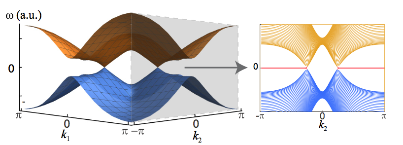
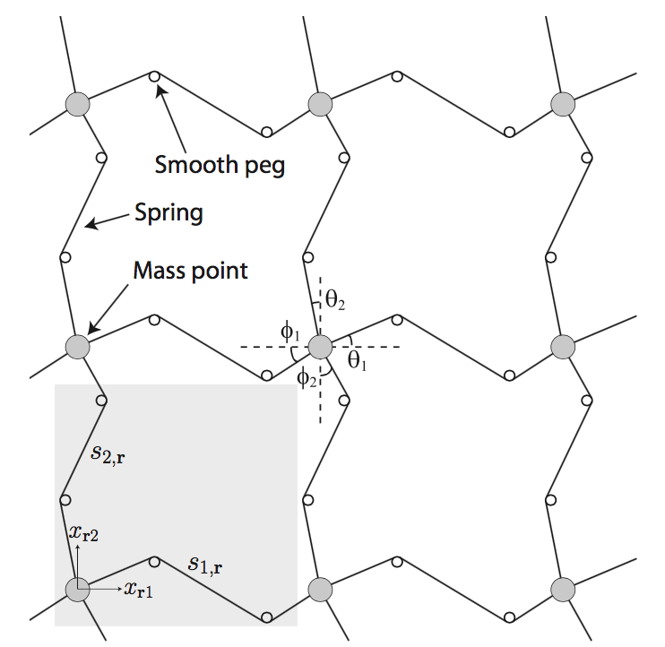

Physics Research (Quantum Condensed Matter Theory)
Publications
Hoi Chun Po, Yasaman Bahri, and Ashvin Vishwanath. “Phonon analog of topological nodal semimetals.” Phys. Rev. B. 93, 205158 (2016). Editor's Suggestion
Yasaman Bahri, Ronen Vosk, Ehud Altman, and Ashvin Vishwanath. “Localization and topology protected quantum coherence at the edge of hot matter.” Nature Communications 6:7341 (2015).
Yasaman Bahri and Andrew C. Potter. “Stable non-Fermi-liquid phase of itinerant spin-orbit coupled ferromagnets.” Phys. Rev. B 92, 035131 (2015).
Yasaman Bahri and Ashvin Vishwanath. “Detecting Majorana fermions in quasi-one-dimensional topological phases using nonlocal order parameters.” Phys. Rev. B 89, 155135 (2014).
See descriptions of these below.
As an undergraduate, I worked on using quantum tensor networks (in particular, matrix-product states) and associated algorithms (imaginary time-evolving block decimation) to study low-dimensional quantum spin systems and their entanglement properties near quantum criticality, which became the subject of my undergraduate honors thesis.
Many-Body Localization
Physics outside of the framework of statistical mechanics
The ability of a physical system to thermalize — that is, approach thermal equilibrium — is one of the central tenets of statistical mechanics and often taken for granted. In particular, can an isolated system of particles fail to thermalize when subject only under the influence of its internal particle interactions? A groundbreaking technical paper from Basko, et al. in 2006, as well as subsequent numerical work by D. Huse and collaborators (see here for one instance), demonstrated mathematically and numerically that such a phenomenon was possible and in fact constituted a ‘‘large” class of systems, not just ‘‘pathological” or fine-tuned ones. This phenomenon is now called ‘‘many-body localization” and has spawned a rich field of research.
The initial setting for these early systems turned out to be those with interactions and strong disorder. Strongly disordered, interacting systems have long been a difficult problem, in contrast to the mathematically easier noninteracting case, termed ‘‘Anderson insulators." For a system at non-zero energy density, the effect of turning on interactions starting from the noninteracting limit is quite non-trivial. Usual perturbation theory cannot be carried over simply.
Many-body localization by itself is quite interesting. It turns out to allow for especially tantalizing consequences for conventional order – both the symmetry-breaking kind and certain kinds of topological order. In addition to beautiful work by Huse, et al., our work [1] was among the first to discuss the consequences of many-body localization for order. These orders — hitherto thought to be confined only to low-energy, low temperature regimes — can exist at high (even ‘‘infinite”) energy densities/‘‘temperatures” if the system is many-body localized.
|  |
To give a sketch of why this might be the case, if order is ‘‘ruined“ by disorder, which can be made precise in that quanta of (certain kinds of) ‘‘disorder variables” are particle-like and generally are free to propogate, then localizing or ‘‘immobilizing“ (via many-body localization) the very ‘‘particles” which destroy order can thereby protect the order.
We focused in particular on (discrete) symmetry-protected topological (SPT) phases. For use as an illustrative example, we took the 1D spin ‘‘cluster-state” Hamiltonian ![H = sum_i left[ lambda_i sigma^z_{i-1} sigma^x_i sigma^z_{i+1} + h_i sigma^x_i + V_i sigma^x_i sigma^x_{i+1} right]](eqs/2063616494727770605-130.png) , which has since been used in subsequent works by other authors for its simplicity as a toy model. In its clean (no disorder) realization, the ground state has topologically protected spin-1/2 excitations localized at each of the two edges in the ‘‘topological phase,” and no such excitations in its ‘‘trivial phase.” The nontrivial excitations are protected by a
, which has since been used in subsequent works by other authors for its simplicity as a toy model. In its clean (no disorder) realization, the ground state has topologically protected spin-1/2 excitations localized at each of the two edges in the ‘‘topological phase,” and no such excitations in its ‘‘trivial phase.” The nontrivial excitations are protected by a  symmetry. When strong disorder is added (as in the parameters of the Hamiltonian above), there is a topological phase in which these gapless spin-1/2 continue to exist in every eigenstate of the Hamiltonian, at all energies. The associated degeneracy shows in both the energy spectrum and the entanglement spectrum (see supplementary material).
symmetry. When strong disorder is added (as in the parameters of the Hamiltonian above), there is a topological phase in which these gapless spin-1/2 continue to exist in every eigenstate of the Hamiltonian, at all energies. The associated degeneracy shows in both the energy spectrum and the entanglement spectrum (see supplementary material).
The numerical experiments we conducted were inspired by experimentally accessible probes, since realistically one does not have access to individual eigenstates in the lab, but an easy to prepare initial state. We showed that under a (modified) quantum spin echo, the edge spins, despite interacting with spin degrees of freedom in the bulk of the chain, can be revived on a time scale that increases (exponentially) with the size of the system, yielding coherent edge spins in the thermodynamic limit. That quantum coherence, which is almost always a low energy, low temperature phenomenon, is manifest here at high energy densities or high ‘‘temperatures” is due to many-body localization.
Reference:
Y. Bahri, et al. Nature Communications 6:7341 (2015).
Non-Fermi Liquids
|  |
Fermi liquid theory successfully describes a vast majority of gapless quantum phases, particularly metals at low temperature. Non-fermi-liquids are exceptions to this, and finding new classes of non-Fermi-liquids is an ongoing effort towards understanding physics that lies outside of Fermi liquid theory. An important class of non-Fermi-liquids arise near quantum critical points, when a finite density of fermions couples directly to the gapless bosonic mode present there. However, coupling fermonic and bosonic modes may give rise to new instabilities that dominate at low temperature and mask the non-Fermi-liquid behavior. Finding new classes of non-Fermi liquids that (i) comprise an entire phase and (ii) are of less exotic origin is both of fundamental and practical interest. With Andrew Potter, we give a simple construction which satisfies these conditions: a ferromagnetic metal with broken continuous rotation symmetry and spin-orbit coupling. While the origin of non-Fermi-liquid physics here has been pointed out before, we crucially show that this phase is also expected to be stable to superconducting and spin-density wave orders that could otherwise mask the non-Fermi liquid behavior. (For instance, this is the physics expected for nematic distortions of the Fermi surface computed here.) For calculations, we rely on a state-of-the-art  expansion constructed by D. Mross, et al. to compute the susceptibility to ordering in various channels.
expansion constructed by D. Mross, et al. to compute the susceptibility to ordering in various channels.
|  |
The spin-orbit coupled ferromagnetic metal serves as a promising testbed for non-Fermi-liquids because of its stability as well as relative ease of experimental realization, arguably one of the simplest candidate non-Fermi-liquids obtainable via fermion-boson coupling.
Reference:
Y. Bahri and A. C. Potter. Phys. Rev. B 92, 035131 (2015).
Topological Phases and Nonlocal Order Parameters
Topological phases of matter, unlike their broken-symmetry counterparts, cannot be distinguished using local order parameters. Rather, they are generally identifiable via nonlocal order parameters, requiring measurement of an extensive number of operators. In this work, we focused on simple nonlocal order parameters which can be computed using easily accessible information (in contrast to, e.g. certain topological invariants). Nonlocal order parameters of this nature had been studied for bosonic systems. A very well-known case is that of the AKLT (Affleck-Kennedy-Lieb-Tasaki) string order which can detect the Haldane phase in quantum spin chains when it is protected by symmetry. Nonlocal order parameters for symmetry-protected topological phases for bosons have more generally been studied by A. Turner, et al. using the framework of matrix-product states and the transformation properties of the phases under symmetry, which in one dimensional bosonic systems is directly related to the projective representations of symmetry groups.
Such analgously simple nonlocal order parameters for symmetry-protected topological phases of fermions had not been devised or discussed. Our work gave some of the first such nonlocal order parameters, for instance string operators of the form  , where
, where  are local operators applied to the ends of the string
are local operators applied to the ends of the string  . We considered spinless fermions in one and two dimensions, the latter approached from the limit of coupled chains, with protection by fermion parity and translation symmetry. We connected them with bosonic phases and also highlighted a proof for the correctness of the order parameters using ideas from entanglement developed in A. Turner, et al.
. We considered spinless fermions in one and two dimensions, the latter approached from the limit of coupled chains, with protection by fermion parity and translation symmetry. We connected them with bosonic phases and also highlighted a proof for the correctness of the order parameters using ideas from entanglement developed in A. Turner, et al.
|  |
|  |
These characterizations of topological phases were timely in light of a new, unprecedented probe for ultracold atomic systems, whose experimental relevance we discuss, the quantum gas microscope (see e.g. Nature 462, 74-77 (2009) and Science
334, 200 (2011)). It enables single-site detection of individual particles in a lattice and is accurate enough to allow for measurement of string order in a bosonic system. The illustrative image below, from Markus Greiner's Group at Harvard, shows a sample lattice structure and individual atoms, with empty and singly occupied sites visible. Measurements of nonlocal order are therefore within experimental reach and could be used as a unique probe for detecting fermionic topological phases.
|  |
Reference:
Y. Bahri and A. Vishwanath. Phys. Rev. B 89, 155135 (2014).
Topologically Protected Mechanical Systems
|  |
Topological band structures in fermionic systems have been the subject of a great deal of interest because of the highly unusual properties that results, such as protected gapless edge states. For bosonic systems (or, when interpreted classically, mechanical systems), such topologically protected gapless modes had previously been discussed at non-zero frequencies until a seminal paper by Kane and Lubensky. They showed that simple mechanical systems – masses on a lattice connected with springs – can also have protected zero-frequency excitations, with a direct correspondence between these modes and their fermionic relatives. This work opened up a direction of research now termed ‘‘topological mechanics." These can be thought of mechanical analogs of topological insulators – apart from the localized gapless excitations, they have a bulk energy gap. In our work, with Hoi-Chun Po and Ashvin Vishwanath, we construct mechanical analogs of fermionic phases which are gapless and protected in the bulk, that is, mechanical (phononic or bosonic) analogs of topological nodal semimetals, as depicted in the frequency spectrum below. We give an explicit construction for a mechanical system – masses, springs, and pegs – which would have zero-frequency excitations in the bulk – excitations which involve the entire lattice – and yet are protected by topology.
|  |
Reference:
H. C. Po, Y. Bahri, and A. Vishwanath. Phys. Rev. B. 93, 205158 (2016). Editor's Suggestion